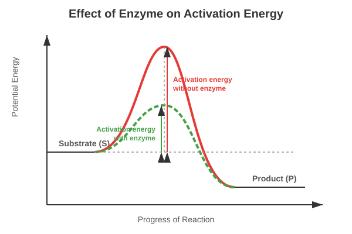

Chapter 9: Biomolecules
There is a wide diversity in living organisms in our biosphere. Now a question that arises in our minds is: Are all living organisms made of the same chemicals, i.e., elements and compounds? You have learnt in chemistry how elemental analysis is performed. If we perform such an analysis on a plant tissue, animal tissue or a microbial paste, we obtain a list of elements like carbon, hydrogen, oxygen and several others and their respective content per unit mass of a living tissue.
If the same analysis is performed on a piece of earth’s crust as an example of non-living matter, we obtain a similar list. What are the differences between the two lists? In absolute terms, no such differences could be made out. However, a closer examination reveals that the relative abundance of carbon and hydrogen with respect to other elements is higher in any living organism than in earth’s crust.
Primary and Secondary Metabolites
- Primary Metabolites: Biomolecules like amino acids, sugars, etc., which have identifiable functions and play known roles in normal physiologial processes.
- Secondary Metabolites: Compounds like rubber, drugs, spices, scents and pigments whose exact physiological role in the host organism might not be completely understood but many of them are useful to human welfare (e.g., alkaloids, flavonoids).
Biomacromolecules
There is one feature common to all those compounds found in the acid insoluble pool. They have molecular weights ranging from ten thousand daltons and above. For this reason, biomolecules are broadly of two types: micromolecules (molecular weight < 1000 Da) and macromolecules.
- Proteins: Polypeptides. They are linear chains of amino acids linked by peptide bonds. They function as enzymes, structural framework, antibodies, receptors, etc. Proteins have four levels of structure: primary, secondary, tertiary, and quaternary.
- Polysaccharides: Long chains of sugars (e.g., cellulose, starch, glycogen). They are linked by glycosidic bonds. They act as structural components or energy stores.
- Nucleic Acids: Polynucleotides (DNA and RNA). They consist of nucleotides linked by phosphodiester bonds. They store and transmit genetic information.
- Lipids: Technically not strictly macromolecules as their molecular weight does not exceed 800 Da, but they form the insoluble cellular membranes. Unlike the polymeric macromolecules, lipids are not polymers.
Enzymes
Almost all enzymes are proteins. There are some nucleic acids that behave like enzymes (ribozymes). An enzyme like any protein has a primary structure, and a tertiary structure where the backbone folds upon itself to form ‘crevices’ or ‘pockets’. One such pocket is the ‘active site’. An active site of an enzyme is a crevice or pocket into which the substrate fits. Thus enzymes, through their active site, catalyse reactions at a high rate.

Figure 9.1: Concept of activation energy with and without enzyme
- Nature of Enzyme Action: The catalytic cycle involves the substrate binding to the active site, inducing a conformational change (induced fit model), formation of the Enzyme-Substrate (ES) complex, breaking/making of bonds to form the Enzyme-Product (EP) complex, and the release of the products.
- Factors Affecting Enzyme Activity: Temperature, pH, change in substrate concentration, and presence of specific chemicals that regulate its activity (Inhibition).
Competency Based Questions (Previous Years & Sample Papers)
Q1. The Michaelis-Menten kinetics of an enzyme-catalyzed reaction can be linearized using the Lineweaver-Burk plot equation: $\frac{1}{V} = \frac{K_m}{V_{max}} \frac{1}{[S]} + \frac{1}{V_{max}}$. A researcher plots $\frac{1}{V}$ on the y-axis against $\frac{1}{[S]}$ on the x-axis for an enzyme. She finds that the y-intercept is $0.02$ sec/$\mu$mol and the x-intercept is $-0.1$ mM$^{-1}$. Calculate the maximum velocity ($V_{max}$) and the Michaelis constant ($K_m$) for this enzyme. What does the value of $K_m$ biologically indicate about the enzyme’s affinity for its substrate?
Answer
From the Lineweaver-Burk plot equation $y = mx + c$: The y-intercept ($c$) is equal to $\frac{1}{V_{max}}$. The x-intercept is equal to $-\frac{1}{K_m}$.
Calculating $V_{max}$: $$ \text{y-intercept} = \frac{1}{V_{max}} = 0.02 $$ $$ V_{max} = \frac{1}{0.02} $$ $$ V_{max} = 50 \text{ } \mu\text{mol/sec} $$
Calculating $K_m$: $$ \text{x-intercept} = -\frac{1}{K_m} = -0.1 $$ $$ \frac{1}{K_m} = 0.1 $$ $$ K_m = \frac{1}{0.1} $$ $$ K_m = 10 \text{ mM} $$
Biological Indication: $K_m$ is the substrate concentration at which the reaction velocity is half of $V_{max}$. Biologically, $K_m$ is an inverse measure of the enzyme’s affinity for its substrate. A relatively low $K_m$ means the enzyme has a high affinity for the substrate (it requires only a small amount of substrate to become highly saturated). Conversely, a high $K_m$ (like $10$ mM, which is quite high for cellular concentrations) indicates a low affinity for the substrate.
Q2. DNA is a long polymer of deoxyribonucleotides. According to Chargaff’s rule for double-stranded DNA, the ratios between Adenine (A) and Thymine (T), and Guanine (G) and Cytosine (C) are constant and equals one. If a segment of double-stranded DNA from a newly discovered extremophile bacterium contains 1000 base pairs, and biochemical analysis reveals that there are 350 Adenine bases in this segment, calculate the total number of Cytosine bases and the total number of hydrogen bonds in this DNA segment.
Answer
Given: Total base pairs = $1000$ (Therefore, total bases = $2000$) Number of Adenine (A) bases = $350$
Calculating Cytosine (C): According to Chargaff’s rule in double-stranded DNA, $A = T$ and $G = C$. Since $A = 350$, then $T = 350$. Total $A + T = 350 + 350 = 700$ bases. The remaining bases must be $G + C$: Total bases - ($A + T$) = $2000 - 700 = 1300$ bases. Since $G = C$, then $C = \frac{1300}{2}$. Number of Cytosine bases = $650$.
Calculating total hydrogen bonds: Adenine pairs with Thymine via 2 hydrogen bonds. Guanine pairs with Cytosine via 3 hydrogen bonds. Number of A-T pairs = $350$ (contributing $350 \cdot 2 = 700$ H-bonds). Number of G-C pairs = $650$ (contributing $650 \cdot 3 = 1950$ H-bonds).
Total hydrogen bonds = $700 + 1950$ = $2650$.
Q3. Proteins exhibit structural hierarchy. A mutation causes a single amino acid substitution (e.g., glutamic acid to valine in sickle cell anemia) in a polypeptide chain. Identify the level of protein structure (primary, secondary, tertiary, or quaternary) that is directly and immediately changed by this substitution. Does this single change guarantee a change in the tertiary structure? Explain based on the properties of amino acid R-groups.
Answer
Direct Structural Change: The level of protein structure directly and immediately changed by a single amino acid substitution is the Primary Structure. The primary structure is simply the linear sequence of amino acids linked by peptide bonds; a substitution changes this exact sequence.
Guarantee on Tertiary Structure: No, a single change does not guarantee a change in the tertiary structure.
- Conservative substitution: If the substitution involves an amino acid with a very similar R-group (e.g., swapping leucine for isoleucine, both being nonpolar and hydrophobic), the folding pattern driven by hydrophobic interactions and steric hindrance might remain entirely unaffected.
- Non-conservative substitution (as in sickle cell): Swapping a hydrophilic, charged amino acid (glutamic acid) for a hydrophobic one (valine) drastically changes the R-group chemistry at that location. The hydrophobic valine will try to bury itself away from the aqueous environment, often forcing a massive change in the 3D folding (tertiary structure) and how it interacts with other subunits (quaternary structure), leading to disease.